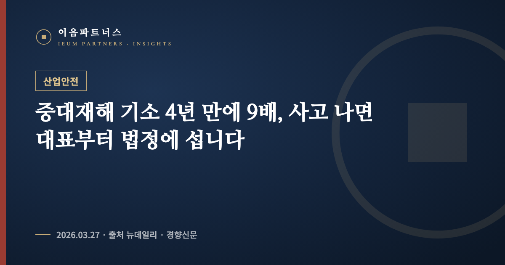

중대재해 기소 4년 만에 9배, 사고 나면 대표부터 법정에 섭니다

중대재해처벌법이 시행된 지 4년이 지나면서, 사고가 나면 경영책임자(사업을 대표하고 총괄하는 사람, 보통은 대표이사)부터 재판에 넘겨지는 일이 흔해졌습니다. 대검찰청 통계로 보면 기소 건수가 4년 만에 약 9배로 늘었습니다. 이 글에서는 숫자가 보여 주는 흐름과 법원이 실제로 무엇을 보는지 정리합니다.
기소가 늘었다는 것은 작은 회사라고 비켜 가기 어렵다는 뜻입니다. 동시에 법원은 서류가 아니라 안전관리가 실제로 작동했는지를 따지고 있어, 지금 무엇을 준비하느냐가 결과를 가를 수 있습니다. 우리 회사 준비 상태가 궁금하시다면 카카오톡 채널 이음파트너스로 편하게 물어 주세요.
숫자로 본 4년
뉴데일리가 인용한 대검찰청 통계에 따르면 중대재해처벌법 기소 건수는 시행 첫해인 2022년 11건에서 2025년 97건으로 늘었습니다(뉴데일리). 사고가 나면 경영책임자를 먼저 기소 대상으로 삼는 흐름이 뚜렷해진 결과로 풀이됩니다.
| 구분 | 내용 |
|---|---|
| 기소 건수 | 2022년 11건 → 2025년 97건(약 9배, 대검찰청 통계) |
| 1심 판결 | 2026년 2월 기준 98건 가운데 무죄 10건(법조계 집계) |
| 형 확정 공표 | 2025년 하반기까지 44곳, 처벌받은 경영책임자 46명 가운데 실형 2명 |
다만 재판 결과는 기소만큼 무겁지 않은 경우가 많습니다. 고용노동부가 공표한 형 확정 사업장을 보면 처벌받은 경영책임자 46명 가운데 실형은 2명이었고, 형량은 징역 1~2년 수준이었습니다. 2025년 하반기 공표분만 보면 경영책임자 24명 가운데 22명이 징역형 집행유예(형의 집행을 일정 기간 미뤄 주는 것)였습니다(경향신문).
정부는 처벌과 함께 예방 투자를 이끌어 내겠다는 뜻을 밝히고 있습니다. 고용노동부 장관은 능력이 있는데도 안전을 소홀히 한 기업에는 엄정하게 책임을 묻고 소규모 기업은 과감히 지원해 “안전을 비용이 아닌 투자로 인식하게끔 만들겠다”고 말했습니다(경향신문).
법원은 무엇을 보고 판단하나
2026년 1월 선고된 시설관리업체와 건설업체 사건에서 법원은 형식적인 준법 서류보다 안전관리 체계가 실제로 작동했는지가 핵심이라고 봤습니다. 서류에 빠진 부분이 있더라도 그것이 사고와 직접 이어지지 않으면 책임을 묻기 어렵다는 판단도 함께 나왔습니다.
거꾸로 말하면 서류를 아무리 두껍게 갖춰도 현장에서 위험이 방치되면 소용이 없습니다. 2026년 3월 대전의 한 공장 화재로 14명이 숨진 사고에서도, 개선 요구가 있었는데도 위험 요인이 방치됐다는 증언이 나왔습니다.
서류에 쓰는 돈, 현장에 쓰는 돈
기사는 기업들이 안전 설비보다 법률 자문과 서류 체계에 예산을 먼저 쓰는 역설을 지적했습니다. 전문가들은 면책을 위한 서류 작업이 아니라 현장의 안전 의무를 실제로 이행하는 쪽으로 무게를 옮겨야 한다고 말합니다. 작은 회사일수록 한정된 예산을 어디에 쓸지가 더 중요합니다.
대표님이 지금 확인할 것
- 위험성평가(작업장의 위험을 찾아 크기를 따지고 줄이는 절차)를 실제로 하고, 결과대로 고쳤는지
- 현장에서 나온 개선 요구가 기록되고, 언제 어떻게 처리됐는지 남아 있는지
- 안전 예산이 서류 작성에만 쓰이지 않고 설비와 교육에 집행되고 있는지
참고한 자료
- 기소 9배 늘었지만 반복되는 대형 참사 … '안전 공백' 속 중처법 실효성 논란 — 뉴데일리 (2026.03.27)
- 작년 하반기 중대재해사업장 22곳…경영책임자 실형 1명 — 경향신문 (2026.03.31)
우리 회사 안전관리 체계가 실제로 돌아가는지 함께 점검해 보고 싶으시다면 카카오톡 채널 이음파트너스로 연락 주세요.
※ 이 글은 일반적인 정보 제공을 위한 것으로, 개별 사안은 세무사·노무사 등 전문가와 함께 확인하시기 바랍니다.